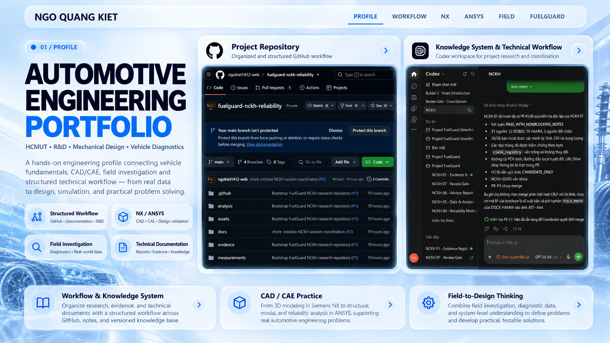
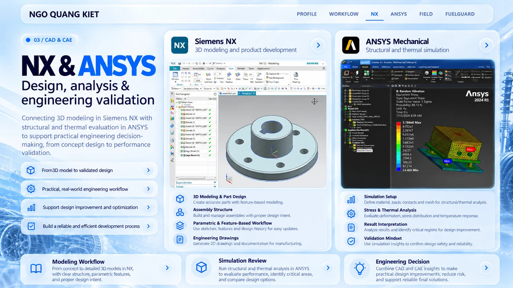
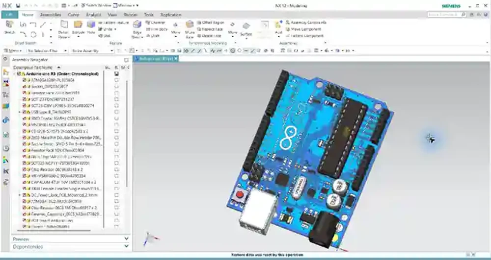
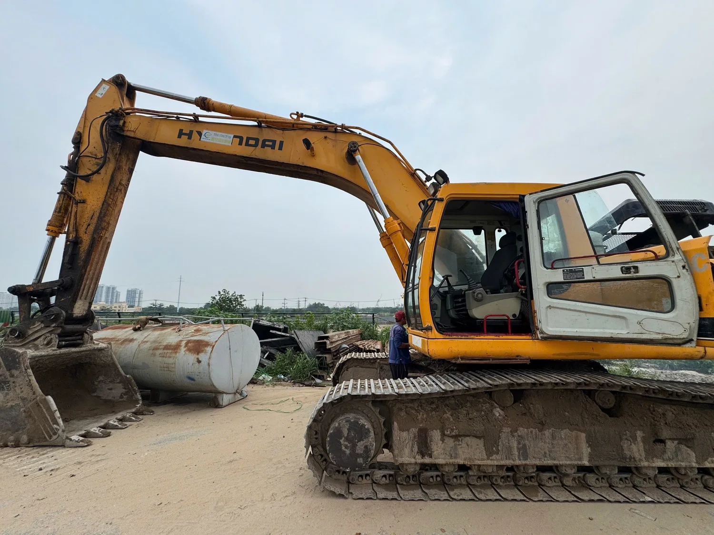
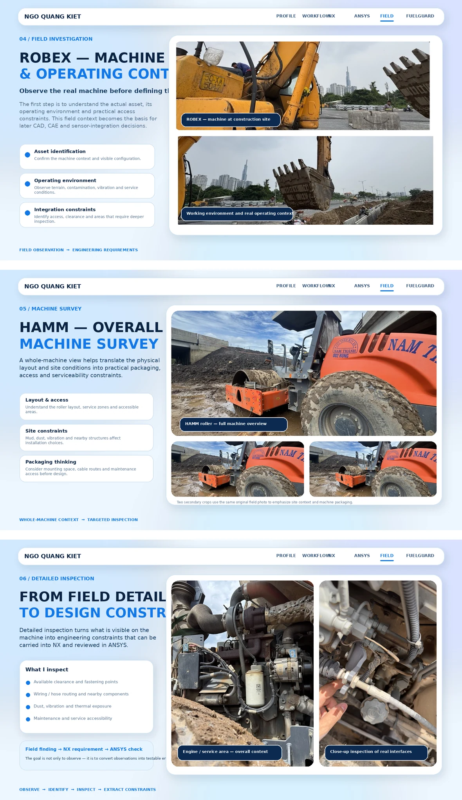

GitHub - versioned workspace

Methods, code, reports and decision history remain reviewable through commits and repository structure.
Real repository capture01 / PROFILE
HCMUT - R&D - Mechanical Design - Vehicle Diagnostics
Hands-on engineering that connects vehicle fundamentals, CAD/CAE, electronics and field investigation through a traceable technical workflow.
02 / HOW I WORK
GitHub preserves versioned engineering work. Google Drive holds source material and field evidence. Together they keep methods, decisions and review state traceable.
Methods, code, reports and decision history remain reviewable through commits and repository structure.
Real repository captureFolder labels are generalized to keep private file names off the public site.
Connected Drive metadata verifiedCapture source material, machine context and actual constraints.
Translate interfaces and requirements into editable NX geometry.
Use ANSYS and electronics prototypes to test engineering questions.
Review outputs against assumptions, sources and field evidence.

03 / ENGINEERING PRACTICE
Open any workspace for focused images, step-by-step decisions and clear evidence limits.


Interfaces - feature-based modeling - assembly structure - design review.
View NX details ↗
Question - setup - mesh - solution - result interpretation.
View ANSYS details ↗
I/O definition - wiring - signal path - prototype checks.
View electronics details ↗
Machine context - operating environment - interfaces - constraints.
View field details ↗04 / REAL MACHINE EVIDENCE
Whole-machine views establish scale and environment. Close inspection converts visible details into packaging and service requirements.



05 / INTEGRATED R&D PROJECT
A connected engineering chain with explicit boundaries between evidence, design, analysis, prototyping and validation.
Electronics experiments support monitoring work before field validation.
Field observations inform packaging. NX translates interfaces into geometry. ANSYS evaluates defined questions. Electronics prototypes explore sensing and signal paths. Validation remains a separate step.
06 / CONTACT & CV
Automotive Engineering student at HCMUT with hands-on exposure to field investigation, Siemens NX, ANSYS Mechanical, vehicle diagnostics and sensor-oriented R&D.